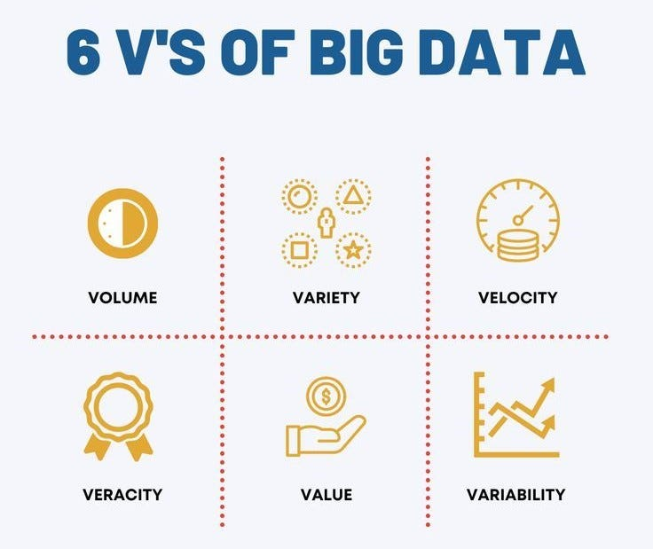
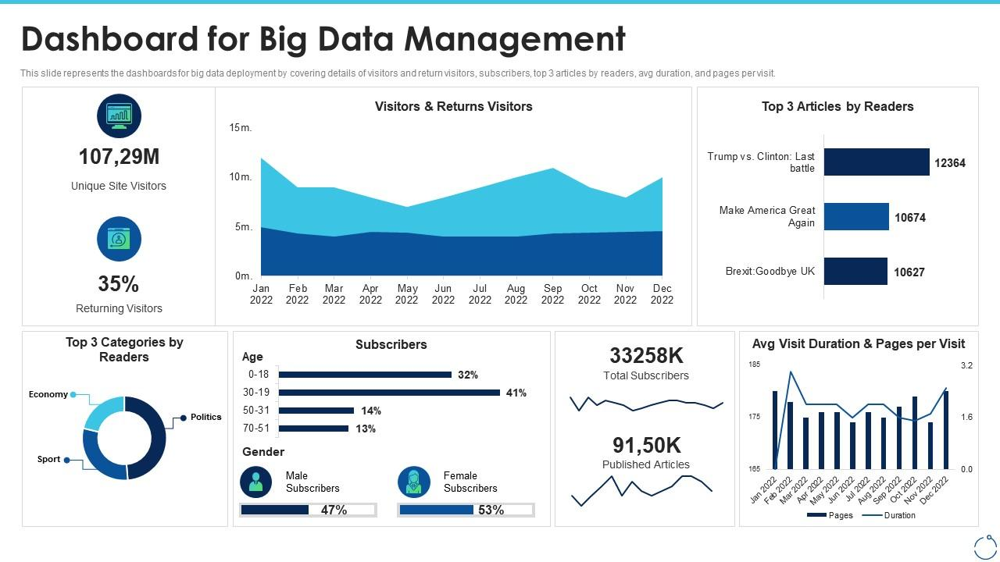
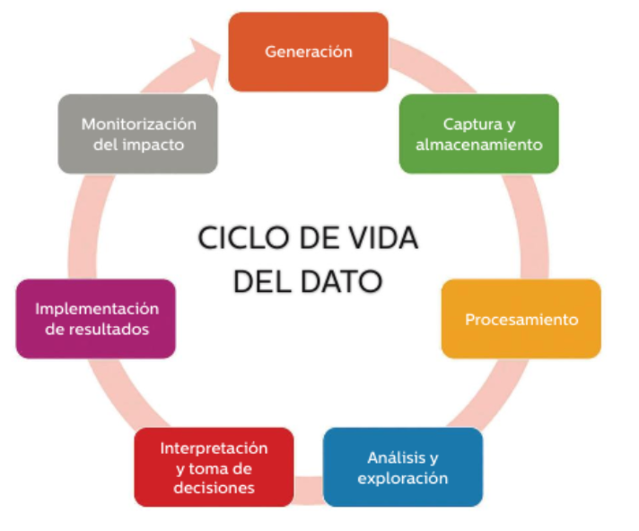
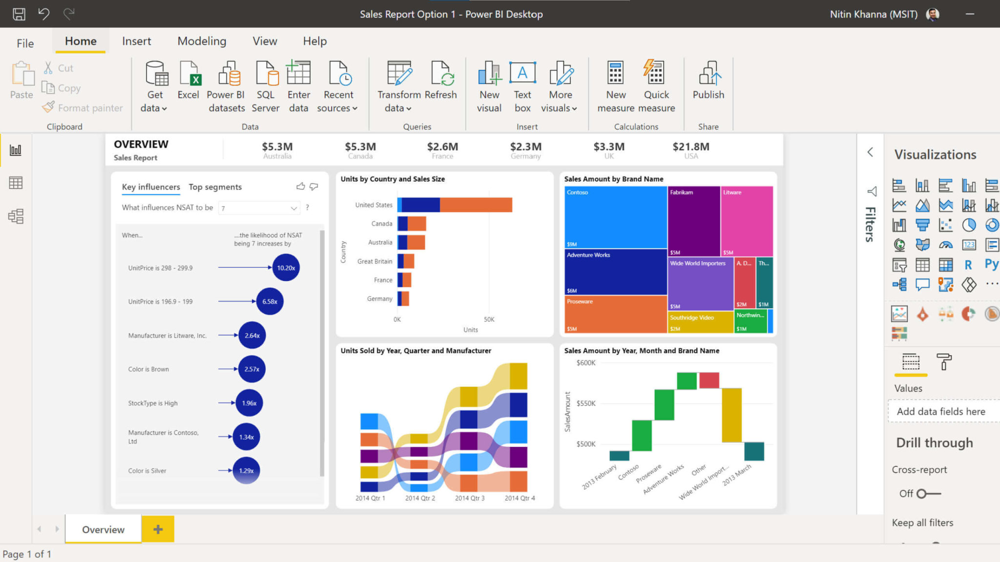
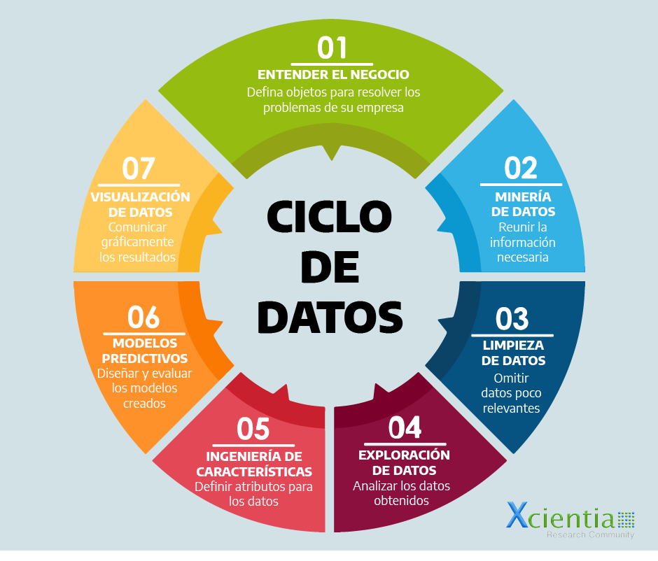
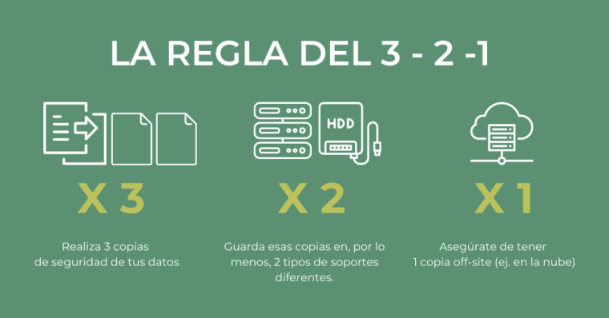

Big Data
1. Big Data
1.1. Antecedents
En els anys seixanta i setanta, quan la informàtica estava en bolquers, començà a gestar-se el que hui coneixem com a big data. Fou una època de primers experiments, quan els centres de dades empresarials tot just començaven a donar els seus primers passos.
Encara que en aquell moment no sabíem que estàvem posant les bases d’una revolució, ja estàvem explorant un nou món de possibilitats amb les dades.
La vertadera transformació, però, es produí al voltant de l’any 2005. Fou aleshores quan el món va prendre consciència de la magnitud de les dades que es generaven en plataformes com Facebook o YouTube. Aquest despertar coincidí amb el naixement de Hadoop, un entorn de treball de codi obert destinat a gestionar grans volums de dades. Fou com obrir una porta a un nou univers d’informació.
En aquells anys també sorgiren les bases de dades NoSQL, adaptant-se a la diversitat i complexitat de les dades que començaven a aparéixer. La combinació de Hadoop i altres tecnologies de codi obert, com Spark, fou la fórmula màgica que féu el big data més accessible i econòmic.
Des d’aleshores, l’explosió de dades ha sigut sorprenent. Ja no sols es tracta del que compartim en línia, sinó també dels objectes i dispositius connectats a Internet (Internet of Things, IoT), que contribueixen amb les seues pròpies corrents de dades, registrant patrons i comportaments.
Amb l’arribada de l’aprenentatge automàtic, les nostres dades es feren més riques i complexes. Ara, no sols interpretem nosaltres les dades, sinó que també ensenyem les màquines a fer-ho. El cloud computing ha ampliat les possibilitats, permetent escalar les operacions i multiplicar la capacitat d’anàlisi, augmentant exponencialment les possibilitats d’aquesta disciplina.
1.2. Definició i característiques
El big data es refereix al conjunt de tècniques i tecnologies que permeten l’anàlisi i gestió de conjunts de dades extremadament grans i complexos, que excedeixen la capacitat de les eines tradicionals de tractament de dades.
Les principals característiques del big data solen conéixer-se com les sis V:
🔹 Volum
És la característica essencial: la massiva quantitat de dades que es generen i recopilen constantment. Exemples: dades comercials, sensors, xarxes socials.
🔹 Velocitat
Fa referència a la rapidesa amb què es generen, processen i analitzen les dades. Exemple: la detecció de fraus financers en temps real.
🔹 Varietat
Diversitat de tipus i fonts de dades: estructurades (bases de dades SQL), semiestructurades (XML, JSON) i no estructurades (textos, imatges). El repte és integrar i analitzar tota aquesta varietat de fonts de dades.
🔹 Veracitat
Relacionada amb la qualitat i fiabilitat de les dades. Els conjunts de big data poden contindre errors o informació falsa, de manera que és fonamental garantir-ne la qualitat.
🔹 Variabilitat
Fa referència a la inconsistència que pot existir en l’estructura o format de les dades. Exemple: dades meteorològiques que varien en freqüència i format.
🔹 Valor
L’objectiu principal del big data és extraure informació valuosa i significativa per a la presa de decisions. La veritable essència del big data resideix en la seua capacitat de convertir dades en coneixements accionables.

A més de les sis V, el big data també es caracteritza per:
-
Agregació: capacitat d’unir dades de múltiples fonts per obtindre una visió més completa. Ex.: anàlisi de clients combinant dades de compres, interaccions en xarxes socials i comentaris.
-
Complexitat: dificultat per a processar, analitzar i gestionar grans quantitats d’informació. La complexitat prové de la combinació de totes les característiques anteriors (volum, velocitat, varietat, veracitat i variabilitat).
1.3. Dada vs. informació
En el món del big data és fonamental entendre la diferència entre dada i informació, dos termes sovint utilitzats com a sinònims però amb significats diferents.
- Una dada és una representació “crua” sense context: un número, una paraula, una imatge.
- La informació, en canvi, és el resultat del processament i organització d’aquestes dades perquè tinguen sentit.
Exemple:
La temperatura “42” per si sola és una dada. Però si indiquem que “42 °C és la temperatura registrada a València a les 15:00 h”, aleshores tenim informació contextualitzada.
Així, el big data busca convertir dades en informació útil per a predir comportaments i ajudar en la presa de decisions.
En el quadre següent es proporciona una visió clara de les diferències essencials entre dada i informació en el context del big data: mentre que les dades són la matèria primera, la informació és el resultat valuós que emergeix després del processament i la contextualització d’eixes dades.
| Dada | Informació | |
|---|---|---|
| Definició | Representació simbòlica d’una entitat o fet. | Dades processades i contextualitzades, amb significat. |
| Naturalesa | Crues, sense processar. | Processades i organitzades. |
| Significat | Sense significat inherent. | Tenen significat i utilitat. |
| Transformació | Poden transformar-se en informació mitjançant processament. | És el resultat del processament de dades. |
| Exemple | Número 27, paraula «tecnologia». | Anàlisi climàtica a partir de registres de temperatura. |
| Utilitat en el big data | Punt de partida, es processen per obtindre informació valuosa. | Objectiu final, el producte útil per a la presa de decisions. |
Llacs de dades
Els data lakes són repositoris centralitzats que permeten a una empresa emmagatzemar totes les seues dades estructurades i no estructurades, sense modificar-les. Sobre ells es poden executar diversos tipus d’anàlisi per a augmentar el rendiment empresarial.
2. Cicle de vida de la dada
L’ús del big data comporta la transformació de grans volums de dades en informació útil i decisions precises. Aquest procés, intrínsec a la gestió eficient de grans conjunts d’informació, implica diverses fases interconnectades, cadascuna de les quals juga un paper crucial en la transformació de dades brutes en insights estratègics. Vegem quines són aquestes fases:
-
Generació de dades
En aquesta primera fase del cicle s’estableix quines dades es tractaran i quines fonts les generaran.
En un entorn de negoci, com hem comentat en unitats anteriors, cal conéixer el context del negoci per identificar les dades que és necessari recollir i on podem aconseguir-les.
Exemple: si tenim un negoci de comerç electrònic i volem conéixer l’acceptació del nostre producte, podem recórrer a les valoracions dels clients en la nostra web o a les ressenyes publicades en xarxes socials.
-
Captura i emmagatzematge de dades
Una vegada recollides, les dades es capturen i s’emmagatzemen per al seu processament posterior. Això pot realitzar-se mitjançant sistemes distribuïts com Hadoop, bases de dades NoSQL o fins i tot sistemes d’emmagatzematge al núvol.
Seguint el nostre exemple, en aquesta fase es recopilarien les valoracions dels clients i les ressenyes publicades en xarxes socials.
-
Processament de dades
En aquesta fase, la mineria de dades i la IA, com ja vam veure en la unitat anterior, tenen un paper fonamental, ja que s’encarreguen de preparar les dades per a l’anàlisi, així com de netejar-los per eliminar el soroll i realitzar transformacions necessàries per millorar-ne la qualitat, convertint-les en informació.
Aquesta combinació de mineria de dades i IA per transformar la dada en informació dóna lloc a la disciplina data science o ciència de dades.
En el nostre exemple, el processament permetria classificar les diferents opinions en una escala que després seria analitzada.
-
Anàlisi i exploració
Les dades processades, ja convertides en informació, s’analitzen per intentar descobrir patrons, tendències i coneixements que ens permeten obtindre insights i facilitar la presa de decisions.
La disciplina encarregada de transformar la informació en insights s’anomena data analytics (anàlisi de dades).
Per ajudar a interpretar i analitzar la informació, aquesta pot presentar-se visualment a través de gràfics, taules o dashboards (quadres de control). Aquests últims són una eina extraordinària que s’ha estès pel seu ús habitual en espais de decisió i per al control en temps real.
Per exemple, podem disposar d’un gràfic que ens mostre els productes ordenats per criteris com els més valorats, més venuts o amb major nombre de ressenyes en xarxes socials, etc.

-
Interpretació i presa de decisions
Amb l’ajuda de les ferramentes d’anàlisi, s’interpreta la informació en el seu context i s’arriba a conclusions que permeten prendre decisions estratègiques i accions concretes.
En el nostre exemple, si l’anàlisi indica que els productes pitjor valorats pels clients no inclouen una funda protectora, es podria plantejar incloure’n una sense cost per al client o aplicant un augment mínim en el preu.
-
Emmagatzematge i implementació de resultats
Una vegada preses les decisions, es passen a la pràctica. Tant la informació analitzada com les conclusions es guarden per a referència futura, permetent un aprenentatge continu i ajustos estratègics.
Seguint l’exemple, s’aplicaria la modificació d’acompanyar el producte amb una funda i aplicar la variació en el preu.
-
Monitorització de l’impacte
S’estableix un sistema de monitorització per avaluar l’efectivitat de les decisions preses i ajustar estratègies. En realitat, aquesta fase podria vincular-se amb la primera fase, la de generació de dades, produint així un cicle tancat, representatiu d’un procés d’observació contínua.
En el nostre exemple, es faria un seguiment específic de l’acceptació del nou producte en termes de vendes i valoracions dels clients.

Vocabulari
Insight: visió o comprensió. En l’àmbit del big data, obtindre insights significa descobrir informació significativa que puga ser utilitzada per comprendre millor situacions, identificar oportunitats o prendre decisions més informades.
Dashboard: quadre de control o tauler de control. És una eina visual dissenyada per oferir una comprensió clara, ràpida i interactiva, generalment en temps real, dels indicadors clau de rendiment o altres dades rellevants per a la presa de decisions.
Power BI
Power BI és un servei de Microsoft que permet analitzar dades, oferir visualitzacions interactives i realitzar operacions d’intel·ligència empresarial amb una interfície senzilla per a l’usuari final.
📊 Tauler de control Power BI Font: Microsoft Power BI 🔗 https://www.microsoft.com/es-es/power-platform/products/power-bi

3. Ciència de dades (Data Science)
La ciència de dades, o data science, és una disciplina que combina elements d’estadística, matemàtiques i programació per extraure coneixement i patrons de dades en diferents formes i convertir-los en informació valuosa.
El procediment que segueix la data science per processar les dades és un cicle de vida tancat, en què es millora la qualitat de la dada amb cada iteració. Les fases del cicle són les següents:
-
Comprensió del negoci
En aquesta fase, es tracta de comprendre el context, el problema i els objectius del projecte de data science. Cal definir clarament la pregunta o hipòtesi que es vol respondre, així com els criteris d’èxit i les limitacions del projecte.
També s’ha d’identificar les parts interessades i establir una comunicació efectiva amb elles.
Un exemple d’aquesta fase seria definir l’objectiu de predir el preu de venda d’un actiu d’una empresa en funció de les seues característiques i determinar les mètriques d’avaluació i els requisits de negoci.
-
Mineria de dades
Ací es busquen i s’obtenen les dades necessàries, ja siguen de fonts internes o externes. Cal verificar-ne la qualitat, quantitat, rellevància i disponibilitat, així com els permisos i normes ètiques per al seu ús. També s’ha de documentar l’origen, format i significat de les dades.
Un exemple d’aquesta fase seria obtindre les dades de preus i característiques d’actius similars al nostre en pàgines de la competència, i emmagatzemar-les en un format adequat per a l’anàlisi.
-
Neteja de dades
Aquesta fase tracta de preparar les dades per al seu posterior anàlisi, corregint i eliminant valors erronis, faltants, duplicats o anòmals. Cal assegurar-se que les dades siguen consistents, completes i precises, i que no continguen soroll que puga afectar els resultats.
També es realitzen transformacions per millorar la qualitat de la dada, normalitzant formats o convertint valors si és necessari.
Per exemple, en aquesta fase es reemplaçarien els valors faltants de les dades de característiques de l’actiu pels valors mitjans o predeterminats, i s’eliminarien els registres que tingueren problemes evidents.
-
Exploració de dades
En aquesta fase es realitza una anàlisi exploratòria de dades, utilitzant estadístiques descriptives i visualitzacions per entendre la seua distribució i relacions. S’identifiquen tendències, correlacions i patrons que poden ajudar a formular hipòtesis inicials, així com detectar possibles anomalies o valors extrems.
Un exemple d’aquesta fase seria crear un histograma dels preus de venda i calcular el coeficient de correlació entre el preu i una característica rellevant de l’actiu (com la superfície o l’antiguitat).
-
Enginyeria de característiques
Aquesta fase tracta de seleccionar, crear i transformar les variables més rellevants per al model.
Es poden utilitzar tècniques com la selecció de característiques, l’extracció de característiques o la creació de noves variables a partir de les existents.L’objectiu és millorar el rendiment del model i reduir la complexitat del problema.
Per exemple, en aquesta fase es podria crear una nova variable que combine diverses característiques de l’actiu (com la ubicació i la proximitat a serveis) per capturar millor el seu valor.
-
Modelat predictiu
Es tracta d’entrenar, avaluar i comparar diferents models d’aprenentatge automàtic o IA utilitzant les dades prèviament processades. S’han de dividir les dades en conjunts d’entrenament, validació i prova, i aplicar els algoritmes més adequats per al problema. També s’ha de mesurar el rendiment dels models utilitzant les mètriques definides en la fase d’entendre el negoci i seleccionar el millor model segons els criteris d’optimització.
Un exemple: entrenar un model de regressió lineal i un altre d’arbre de decisió, i comparar el seu error quadràtic mitjà en el conjunt de proves.
-
Visualització de dades
Els resultats i descobriments del projecte es comuniquen a les parts interessades mitjançant gràfics, taules, informes o dashboards interactius. S’ha de presentar el model seleccionat, el seu rendiment, la seua interpretació i les seues limitacions, així com les recomanacions o accions derivades de l’anàlisi. També s’ha de demanar feedback a les parts interessades i verificar si s’han complit els objectius i requisits del projecte.
Un exemple: crear un dashboard que mostre el preu real de l’actiu junt amb el calculat en la predicció i les variables més influents.

Vocabulari
Una de les professions més demandades és la de data scientist, les competències de la qual combinen anàlisi de dades i programació:
🔗 Vídeo data scientist
4. Anàlisi de dades (data analytics)
L’anàlisi de dades, o data analytics, és una disciplina derivada de la data science el principal objectiu de la qual és transformar dades en informació per facilitar la presa de decisions. Utilitza ferramentes estadístiques i de software per arreplegar, processar i analitzar conjunts de dades per descobrir patrons o tendències que generen insights útils. En l’era de la informació, això és crucial per a les organitzacions que busquen obtindre avantatges competitives i optimitzar les seues operacions.
Les diferències clau entre el data analytics i la data science es resumeixen en el quadre següent:
| Data Science | Data Analytics |
|---|---|
| Prediu el futur a partir de patrons del passat. | Transforma les dades en informació significativa. |
| Es proposen preguntes. | Es formulen respostes. |
| Utilitza la informació per predir els problemes futurs. | Utilitza la informació per resoldre els problemes de negoci. |
| Converteix les dades en informació. | Converteix les dades en insights. |
| Investiga solucions i crea estratègies per al que ocorrerà. | Busca solucions a problemes identificats a través de dades variades i conegudes. |
| Requereix habilitats de programació, matemàtiques, estadística i IA. | Requereix habilitats més orientades al negoci i a la visualització de dades. |
Al igual que la data science, la disciplina del data analytics segueix un cicle de vida de dades, encara que el presentem de manera lineal, en la pràctica és iteratiu, ja que és comú que es requerisca tornar a una etapa anterior basant-se en els resultats i avaluacions que s’han realitzat en etapes prèvies.
Comparat amb el cicle de vida de la data science, ací veurem que se subratlla molt més la creació de models predictius i més la descripció i comprensió de les dades.
Les fases del cicle de vida del data analytics són les següents:
-
1. Comprensió del problema de negoci
Abans de submergir-se en les dades, és crucial entendre el problema de negoci que es vol resoldre. Açò implica definir els objectius clarament.
Per exemple: en una empresa de recomanació de productes en línia, si volem augmentar els beneficis almenys un 10 %, cal determinar quins factors influeixen en el procés de compra, utilitzant tècniques com la mineria de dades o l’aprenentatge automàtic, segons el nivell de treball (ja siga inclòs en l’empresa o externalitzat) i ajustar les estratègies (informes, models de dades, etc.).
-
2. Comprensió de les dades
En aquesta fase, es recopilen dades inicials i s’identifiquen els requisits perquè siguen comprensibles. Es verifica la disponibilitat de les dades i la seua qualitat o estructura.
Per exemple: si tenim una empresa de comerç electrònic i volem millorar les recomanacions de determinats productes als clients, utilitzarem la recopilació de dades de l’historial de compres, comportament de navegació en la web i dades demogràfiques dels clients.
-
3. Preparació de les dades
Les dades es recullen de múltiples fonts i es netegen per assegurar la seua qualitat. Açò pot implicar l’eliminació de duplicats, el maneig de valors absents i la correcció d’errors. Després, es formategen per a una anàlisi coherent i es combinen o es mesclen si és necessari.
En el cas del nostre exemple, es podrien netejar les dades de navegació i combinar-les amb l’historial de compres per crear un conjunt de dades unificat.
-
4. Anàlisi exploratòria i modelatge
Ací es desenvolupa una metodologia per analitzar les dades. Es determinen variables clau i es construeixen models estadístics o d’aprenentatge automàtic per al seu estudi.
En l’empresa de l’exemple, es podrien utilitzar algorismes de filtratge col·laboratiu per recomanar productes basats en les preferències d’usuaris similars.
-
5. Validació
Una vegada s’ha construït el model, s’avaluen els resultats. Açò pot implicar l’aplicació de tècniques estadístiques per validar la fiabilitat i la precisió del model. Es revisa el procés i es determinen els següents passos. Si els resultats no són vàlids, pot ser necessari tornar a passos anteriors.
En el nostre exemple, açò significaria verificar si les recomanacions del model coincideixen amb les compres posteriors dels usuaris.
-
6. Visualització i presentació
Finalment, es comuniquen els resultats. S’elegeix la millor manera de presentar els descobriments a les parts interessades, per exemple, mitjançant dashboards interactius o presentacions. Es conta una història convincent sobre els resultats i es fan recomanacions basades en els descobriments de l’anàlisi.
Per a l’exemple de l’empresa de comerç electrònic, això podria resultar en una presentació que demostre com les recomanacions personalitzades incrementen les vendes.
Navega
Una de les professions més demandades hui en dia és la de data analyst.
Aquest perfil analitza enormes quantitats de dades per millorar processos i prendre decisions estratègiques.
En aquest vídeo de Datademia podràs entendre què fa un data analyst: 🔗 Vídeo
5. Emmagatzematge de Big Data
En l’actualitat, les dades es generen a una velocitat sense precedents i les empreses s’enfronten al repte d’emmagatzemar i gestionar eficientment un volum massiu d’informació. La solució a aquest desafiament resideix en el concepte d’emmagatzematge de dades per nivells.
L’emmagatzematge de dades per nivells és una tècnica avançada que classifica les dades segons la seua importància i freqüència d’ús, assignant-los el mitjà d’emmagatzematge més adequat i rendible. Es basa en la premissa que no totes les dades tenen el mateix valor ni requereixen el mateix nivell d’accés.
Els nivells típics d’aquest model d’emmagatzematge són:
- Nivell crític (dades de valor alt): Són dades essencials per a les operacions diàries i decisions estratègiques que requereixen accés immediat.
Per aquest motiu, s’emmagatzemen en solucions d’alta velocitat com discos SSD o memòries RAM, que, encara que més costoses, ofereixen l’agilitat necessària per a l’anàlisi en temps real o transaccions comercials urgents.
- Nivell temperat (dades de valor mitjà): Aquesta categoria inclou dades que, encara que importants, són consultades amb menys freqüència.
Poden emmagatzemar-se en sistemes tradicionals com discos HDD, que proporcionen un bon equilibri entre cost i rendiment, sent adequats per a informes periòdics o anàlisis de tendències.
- Nivell fred (dades de valor baix): Les dades que s’han de conservar per raons legals, històriques o de compliment, però que s’utilitzen poc, es classifiquen com a fredes.
Aquestes s’allotgen en mitjans d’emmagatzematge de baix cost i baixa velocitat, com cintes magnètiques o sistemes de núvol amb costos mínims.
La implementació del model de nivells comporta nombrosos avantatges, com ara:
-
Reducció de costos: Utilitzar recursos d’emmagatzematge d’acord amb el valor i la freqüència de les dades permet reduir significativament els costos associats.
-
Millora en l’eficiència operativa: L’accés més ràpid a les dades crítiques millora el rendiment de les aplicacions i la productivitat de les empreses.
-
Flexibilitat i adaptabilitat: La capacitat per moure dades entre nivells segons la seua rellevància facilita que les empreses s’adapten de manera dinàmica a les seues necessitats canviants.
Vocabulari
- SSD: Solid State Disk, o disc d’estat sòlid.
- HDD: Hard Disk Drive, o unitat de disc dur (disc dur «tradicional»).
Els SSD són solucions d’alta velocitat, encara que més costoses, mentre que els HDD ofereixen més capacitat a menor cost.
6. Aplicació del big data en les empreses
L’aplicació del big data en les empreses ha desencadenat una revolució en la manera com es gestionen i utilitzen les dades.
A continuació, explorarem algunes de les àrees més destacades on les empreses apliquen big data, destacant exemples que il·lustren la influència transformadora d’aquesta tecnologia habilitadora.
-
Anàlisi de clients
L’anàlisi de clients a través del big data ajuda les empreses a comprendre les preferències i comportaments dels seus clients, permetent estratègies de marketing més efectives i personalitzades.
Exemples:
- Recomanacions personalitzades de productes i serveis: plataformes com Netflix o Amazon utilitzen algoritmes de recomanació basats en big data per analitzar l’historial de visualització i oferir recomanacions personalitzades als usuaris.
- Segmentació de clients en comerç electrònic: les empreses de comerç electrònic utilitzen anàlisi de big data per segmentar els clients segons el seu comportament de compra, la qual cosa facilita el disseny i implementació de campanyes de marketing per a cada segment.
-
Optimització d’operacions
L’optimització d’operacions a través del big data implica analitzar grans conjunts de dades per millorar l’eficiència i la productivitat en la cadena de subministrament, la gestió d’inventaris i la planificació de la demanda, sent una pràctica molt comuna en empreses que es dediquen al comerç o que formen part de cadenes logístiques.
Exemples:
- Gestió de la demanda: les cadenes de botigues utilitzen big data per analitzar patrons de compra, preveure la demanda i optimitzar els nivells d’inventari, reduint costos i millorant la disponibilitat de productes.
-
Presa de decisions basada en dades
Les empreses utilitzen eines i tècniques de big data per donar suport a la presa de decisions informades. La presa de decisions informades es basa en l’anàlisi de grans conjunts de dades per identificar patrons i tendències.
Exemples:
- Personalització de serveis financers: en el sector financer, les institucions utilitzen big data per avaluar riscos i prendre decisions sobre inversions i préstecs.
- Anàlisi de mercat en temps real: en el comerç al detall i la publicitat, s’utilitzen eines d’anàlisi en temps real per ajustar estratègies de marketing segons la demanda i també segons la competència.
-
Marketing personalitzat
El big data s’utilitza per segmentar audiències, personalitzar campanyes publicitàries i mesurar el retorn de la inversió.
Exemples:
- Publicitat digital segmentada: les plataformes de publicitat en línia utilitzen dades demogràfiques, comportaments de navegació i preferències de compra per dirigir anuncis a segments d’audiència específics.
- Programes de fidelització personalitzats: les empreses implementen programes basats en big data per recompensar els clients de manera personalitzada segons el seu historial de compres i preferències.
-
Prevenció del frau i seguretat
L’ús del big data permet detectar patrons anòmals per part dels usuaris en l’ús de plataformes i serveis, i així prevenir fraus, millorant la seguretat.
Exemples:
- Detecció de fraus financers: els bancs utilitzen anàlisis de big data per monitorar transaccions i detectar patrons inusuals que podrien indicar fraus amb targetes de crèdit.
-
Salut
En el sector de la salut, el big data s’aplica a l’anàlisi de dades en històries clíniques, investigació genòmica i descobriment de medicaments. També té un ús intensiu en la detecció precoç de malalties.
Exemples:
- Historials mèdics electrònics: alguns hospitals utilitzen aquest tipus de dades per a millorar l’atenció mèdica personalitzada i la presa de decisions clíniques.
- Investigació genòmica: la investigació genòmica utilitza big data per analitzar grans conjunts de dades genètiques, accelerant el descobriment de gens associats a malalties i facilitant el desenvolupament de teràpies personalitzades.
-
Recursos humans i gestió del talent
El big data s’aplica en la gestió dels recursos humans per analitzar dades relacionades amb el rendiment dels empleats, la satisfacció laboral i la retenció del talent.
Exemples:
- Anàlisi de rendiment: ús de dades per avaluar el rendiment individual i col·lectiu dels empleats, identificar àrees de millora i facilitar el desenvolupament professional.
- Models predictius de rotació: ús d’algoritmes de big data per predir la probabilitat que un empleat abandone l’empresa, permetent estratègies proactives de retenció.
-
Anàlisi de text i sentiment
Les empreses utilitzen tècniques de processament del llenguatge natural (NLP) per analitzar grans volums de text —com comentaris de clients, revisions en xarxes socials i comunicacions internes.
Exemples:
- Anàlisi de sentiment en xarxes socials: les eines de big data poden processar comentaris en plataformes socials per avaluar la percepció pública d’una marca o producte i prendre mesures correctives si és necessari.
- Anàlisi d’opinions de productes: el processament de comentaris de clients en llocs de comerç electrònic permet entendre millor les preferències dels consumidors i millorar productes i serveis.
6.1. Casos d’èxit
A continuació, veurem alguns exemples reals d’empreses que han aplicat amb èxit el big data per millorar els seus processos i resultats.
- Spotify
Spotify aplica big data i algoritmes d’aprenentatge automàtic per personalitzar les experiències auditives dels seus usuaris a través de llistes de reproducció com Descobriment setmanal i Radar de novetats.
- Zara
Zara utilitza big data per optimitzar la seua cadena de subministrament i la gestió d’inventaris. Analitza dades en temps real sobre les tendències de moda, les vendes de productes i el comportament dels clients per prendre decisions ràpides sobre la producció i distribució de les seues peces.
- Starbucks
Starbucks utilitza big data per millorar l’experiència del client i optimitzar la ubicació dels seus establiments. Analitza dades demogràfiques, preferències dels clients i patrons de trànsit per determinar el millor lloc per a noves botigues.
- UPS
L’empresa de missatgeria UPS utilitza big data per optimitzar les seues rutes de repartiment. A través de l’anàlisi de grans volums de dades, incloent-hi condicions del trànsit, patrons meteorològics i ubicacions de lliurament, UPS pot determinar les rutes més eficients per reduir el consum de combustible i millorar la puntualitat en les entregues.
- Boeing
Boeing utilitza big data per millorar l’eficiència de les seues operacions i la seguretat dels seus avions. Mitjançant l’anàlisi de dades generades pels sensors dels avions, Boeing pot realitzar manteniment predictiu, anticipar fallades i reduir els costos associats a les reparacions no planificades.
- American Express
American Express utilitza big data per detectar fraus i personalitzar serveis financers.
Navega
L’anàlisi de sentiments en xarxes socials és una poderosa eina per a les marques, ja que permet entendre l’actitud i la fidelitat dels clients cap als seus productes.
En aquest article de YouScan podràs veure exemples pràctics de com Coca-Cola realitza una anàlisi de sentiment a partir de publicacions en xarxes socials:
Análisi de sentiment, YouScan
7. Seguretat de les dades
Amb l’augment exponencial de la quantitat de dades generades i emmagatzemades, la seguretat de les dades s’ha convertit en una preocupació crítica per a les organitzacions de tot el món.
7.1 Seguretat de la informació
Per entendre com protegir les dades, primer cal conèixer primerament els pilars fonamentals de la seguretat de la informació, coneguts com a CIA Triad (Confidencialitat, Integritat i Disponibilitat):

- Confidencialitat: assegura que la informació només siga accessible per a les persones autoritzades. Això implica l’ús de tècniques com:
- Xifratge de dades: la informació es codifica per evitar l’accés no autoritzat.
- Control d’accés: es defineixen permisos i rols per limitar l’accés a les dades sensibles.
- Autenticació: es verifica la identitat dels usuaris abans d’accedir a la informació.
- Integritat: garanteix que la informació siga precisa i completa, i que no haja estat alterada de manera no autoritzada. Això es pot aconseguir mitjançant:
- Controls criptogràfics: com ara funcions hash que permeten verificar que les dades no han estat modificades.
- Registres d’auditoria: es mantenen registres de totes les operacions realitzades sobre les dades per detectar qualsevol alteració no autoritzada.
- Seguretat física i lògica: es protegeixen els sistemes i les xarxes per evitar accessos no autoritzats que puguen comprometre la integritat de les dades.
- Disponibilitat: assegura que la informació estiga accessible quan siga necessària per als usuaris autoritzats. Això implica:
- Sistemes de recuperació davant desastres: es desenvolupen plans per restaurar l’accés a les dades en cas de fallada del sistema o desastre.
- Redundància i còpies de seguretat: es mantenen còpies de les dades en ubicacions diferents per garantir la seva disponibilitat en cas de pèrdua o corrupció.
7.2 La privacitat de la informació
La privacitat de la informació es refereix a la protecció de les dades personals i sensibles dels individus contra l’accés no autoritzat i l’ús indegut.
La protecció de dades en Espanya i Europa està regulada principalment pel Reglament General de Protecció de Dades (RGPD), que estableix les normes per al tractament i la protecció de les dades personals.
Les principals característiques del RGPD són:
- Consentiment explícit: les organitzacions han d’obtenir el consentiment clar i explícit dels individus abans de recopilar i utilitzar les seues dades personals.
- Dret d’accés i rectificació: els individus tenen dret a accedir a les seues dades personals i a sol·licitar la rectificació de qualsevol informació incorrecta.
- Dret a l’oblit: els individus poden sol·licitar la supressió de les seues dades personals en determinades circumstàncies.
- Notificació de violacions de dades: les organitzacions han de notificar les autoritats de protecció de dades i els individus afectats en cas de violació de dades personals.
- Responsabilitat: les organitzacions són responsables de complir amb el RGPD i han de demostrar la seua conformitat amb les normes establertes.
També s'aplica la Llei Orgànica de Protecció de Dades i Garantia dels Drets Digitals (LOPDGDD), que complementa el RGPD a Espanya. Aquesta llei estableix disposicions específiques per a la protecció de dades personals i els drets digitals dels ciutadans espanyols:
- Drets digitals: la LOPDGDD reconeix i protegeix els drets digitals dels ciutadans, com ara el dret a la intimitat en les comunicacions electròniques i el dret a la protecció de dades personals en l’àmbit digital.
- Autoritat de control: la LOPDGDD estableix l’Agència Espanyola de Protecció de Dades (AEPD) com a autoritat de control responsable de supervisar el compliment de la normativa de protecció de dades a Espanya.
- Sancions: la LOPDGDD estableix sancions específiques per a les infraccions de la normativa de protecció de dades, que poden incloure multes econòmiques i altres mesures correctives.
7.3 Emmagatzematge segur de dades
L’emmagatzematge segur de dades és fonamental per protegir la informació sensible i garantir la seva integritat i confidencialitat. Algunes pràctiques recomanades per a l’emmagatzematge segur de dades inclouen:
- Còpies de seguretat: realitzar còpies de seguretat regulars de les dades i emmagatzemar-les en ubicacions segures i separades per protegir-les contra pèrdues o corrupcions.
- Xifratge de dades: utilitzar tècniques de xifratge per protegir les dades emmagatzemades, assegurant que només els usuaris autoritzats puguen accedir-hi.
- Esborrat segur: implementar procediments per esborrar dades de manera segura quan ja no siguen necessàries, evitant la recuperació no autoritzada.
Regla 3-2-1
Una pràctica recomanada per a la gestió de còpies de seguretat és la regla 3-2-1, que consisteix en:
- Mantenir almenys 3 còpies de les dades.
- Emmagatzemar les còpies en 2 tipus diferents de mitjans d’emmagatzematge. Per exemple, un disc dur extern i un servei d’emmagatzematge al núvol.
- Guardar 1 còpia fora del lloc per protegir-la contra desastres locals.
